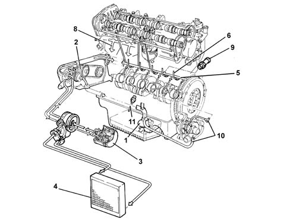

ENGINE OIL SUPPLY CIRCUIT
- Path
- Descriptions > 10 ENGINE > 1084 ENGINE LUBRICATION > ENGINE OIL SUPPLY CIRCUIT
- Kind
- system description
- Applies to
- engines: 2.4 JTD 20V; all production periods
- Interactive page
- https://sloeber94.github.io/elrnDB-lThss/en/#/841825
Applies to: engines: 2.4 JTD 20V; all production periods

- 1. Suction head with filter mesh
- 2. Oil pump
- 3. Oil filter cartridge
- 4. Heat exchanger (water/oil)
- 5. Main longitudinal duct
- 6. Jets (piston skirt cooling)
- 7. Vertical channel (camshaft mounting lubrication)
- 8. Oil falling back into sump
- 9. Switch for engine oil pressure warning light
- 10. Turbocharger lubrication pipes
- 11. Engine oil level sensor.